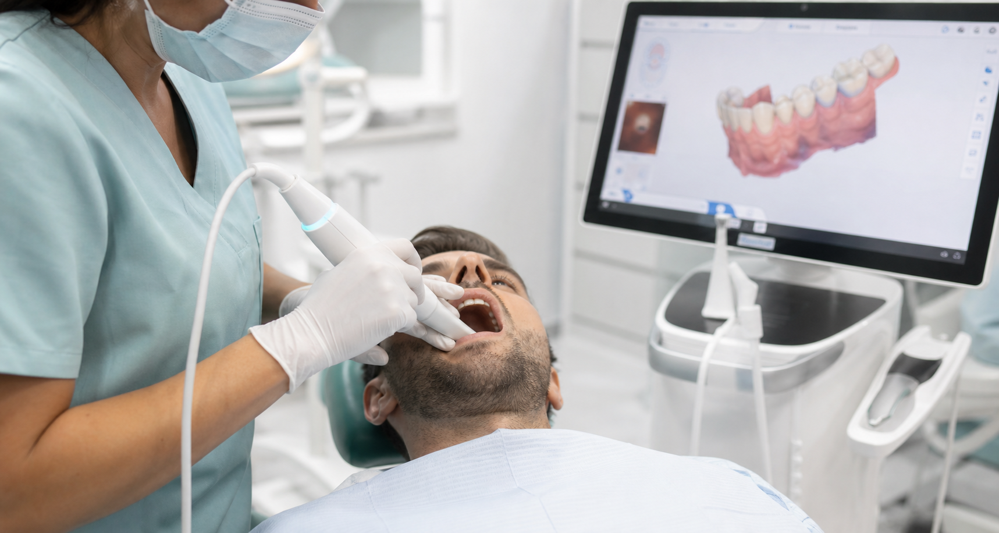

German materials
Raw crown materials are sourced from Germany for EU-quality standards.
In-house dental laboratory
DentAlba combines prosthetists, German-sourced raw materials and 3D scanner measurements to personalize crowns and implant restorations.


Digital precision
Digital scanning helps the laboratory create crowns that fit the patient's bite, shape and aesthetic needs more precisely than manual impressions alone.
Raw crown materials are sourced from Germany for EU-quality standards.
Prosthetists personalize fit, shade and shape inside DentAlba's own workflow.
Because the lab is in-house, adjustments can be managed more directly.
Send photos or X-rays on WhatsApp and ask for a preliminary treatment plan.